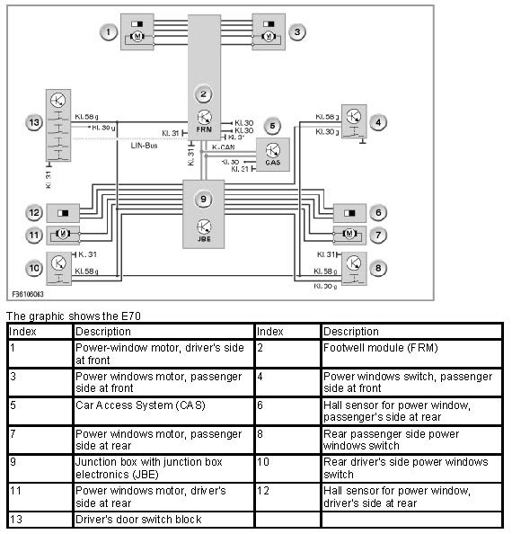

Distributed Function of the Power Window Regulators
Distributed Function Of The Power Window Regulators
Distributed function of the power window regulators
The power window regulator function is implemented by a number of control units. The footwell module actuates the front power windows. The rear power windows, if fitted, are activated through the junction box electronics.

The control units involved communicate via the data buses in the vehicle. The junction box supplies the control units with voltage.
No liability can be accepted for printing or other errors. Subject to changes of a technical nature.